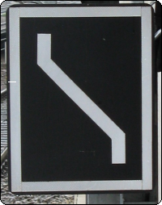

01
Bedeutung
Der Fahrweg führt in das Streckengleis entgegen der gewöhnlichen Fahrtrichtung.
Signalbuch-Online
Informationen und Erklärungen zum Gegengleisanzeiger gemäß Signalbuch.
Beschreibung Lichtsignal:
Ein weiß leuchtender schräger Lichtstreifen, dessen Enden in der Regel senkrecht nach oben und unten abgebogen sind.
DV 301:
Die Enden können bis auf Weiteres nicht abgewinkelt sein.
Formsignal:
Eine rechteckige schwarze Scheibe mit weißem Rand und einem weißen von rechts nach links steigenden Streifen, dessen Enden senkrecht abgewinkelt sind. Das Formsignal ist rückstrahlend.

Der Gegengleisanzeiger zeigt an, dass auf zweigleisiger Strecke das Gleis entgegen der gewöhnlichen Fahrtrichtung befahren werden darf.
Der Auftrag, das Gleis entgegen der gewöhnlichen Fahrtrichtung zu befahren, gilt bis zum nächsten Bahnhof.
Liegt davor eine Abzweig- oder Überleitstelle, gilt der Auftrag bis dahin.
Wird das Formsignal vorübergehend angewendet, wird dies bei den Eisenbahnen des Bundes durch das Infrastrukturunternehmen in der La bekannt gegeben. Bei NE-Bahnen wird in einer betrieblichen Anweisung des Betriebsleiters darauf hingewiesen.
Zum Öffnen der Galerie bitte Bild anklicken!